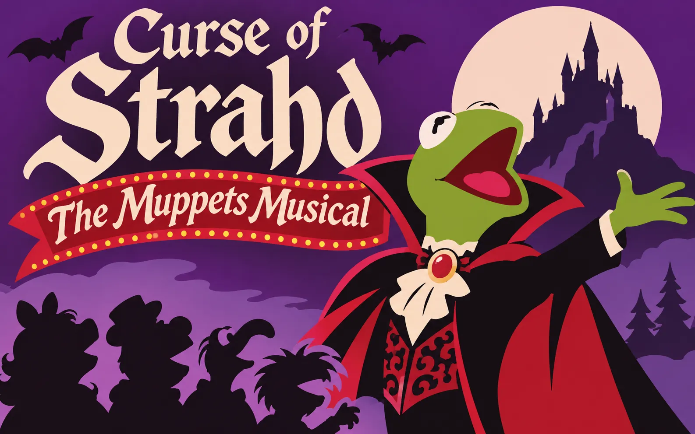

LEAD ROLE · 001
♛
Kermit
the Count
Strahd von Zarovich
LORD OF RAVENLOFT · HOST OF THE EVENINGA VENGRATH VARIETY OF TERROR · PRESENTED IN GOTHIC VISION
THE MUPPET SHOW presents
One castle. One vampire. An alarming number of felt-based performers.
TAKE YOUR SEAT ↓
WELCOME, DEAR AUDIENCE
Ladies, gentlemen, ghosts and assorted woodland creatures: welcome to Barovia, where the nights are long, the hospitality is questionable, and the host absolutely refuses to let anyone leave before the finale.
Tonight's special guest is Kermit the Frog as Strahd von Zarovich: master of Ravenloft, lord of the mists, and an amphibian with a rather serious castle problem. The familiar horrors of Barovia take the stage as a macabre variety show, with dramatic entrances, suspiciously catchy interludes and a laugh track that may not be entirely voluntary.
A campaign in the spirit of gothic melodrama and backstage chaos. Please keep your hands, feet and souls inside the theatre at all times.
♪ It's time to play the music…
THE MISTS ARE ROLLING IN
A MOST UNFORTUNATE ENSEMBLE
Every great show needs a leading monster, a supporting cast and at least one person backstage asking why the fog machine is screaming.
Strahd von Zarovich
LORD OF RAVENLOFT · HOST OF THE EVENINGOur unfortunate performers
CAST DETAILS TO BE ANNOUNCEDYou know who you are
APPLAUSE IS NOT OPTIONALTHE SHOW MUST GO ON
The curtain rises. The mists close behind you.
Ravenloft opens its doors. Mind the bats.
Every show has an ending. The Count has other ideas.
A VENGRATH PRODUCTION
This page is the programme for a new campaign. Cast biographies, session chronicles, handouts and production notes will appear here as the show develops.